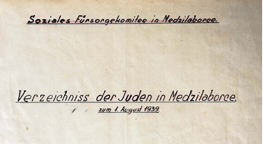

|
• Background • Database • Acknowledgements • Searching the Database |
According to Beit Hatfutsot, the following describes the experience of the Jewish community in Medzilaborce:
In 1930, 874 Jews lived in Medzilaborce. A year before World War II broke out, the Munich Agreement was signed in September 1938 and as a consequence, the Republic of Czechoslovakia was dismembered. In October of that year, Slovakia declared its autonomy and on March 14, 1939, became an independent state, a satellite of Nazi Germany. The Jews were soon removed from the social and economic life of the country and their places of business were given to Slovaks “of the Aryan race”. Some 10 Jewish young men of Medzilaborce were drafted into the Sixth Battalion of the Slovak army as forced labor. In December 1940, 859 Jews were living in the town.
On May 20, 1942, 1,001 Jews in Medzilaborce and the surrounding area were deported to Puławy, Poland, where most of them were killed by the Germans or died of hunger or disease. Only some Jews, whose work was essential to the authorities or some who managed to hide remained in the town.
At the end of the War In 1945, some 30 members of the community survived. Together with survivors from other places, they revived the life of the community, with Leopold Weissberger as the head.
In 1948, 63 Jews (33 men, 23 women, and 7 children) were living in Medzilaborce. In the following years most of them left the place and moved to bigger towns in Czechoslovakia or went to Israel.
This database contains 824 Jewish names from 174 families, taken from the folder named “Verzeichniss der Juden in Medzilaborce” found at Jewish Community office in Košice (ŽNO – Židovská Náboženská Obec v Košiciach). The list of Jews was compiled by “Soziales Fürsorgekomitee in Medzilaborce” on 01-Aug-1939.

The database includes the following fields:
The information contained in this database was donated by Peter Absolon. The transcription was done by Peter Absolon and the group of volunteers: rabbi Joel Meisels, Tom Klein, Erica Wiesel, Yoel Schwarcz, Elizabeth Feder and Yitschok Margareten.
In addition, thanks to JewishGen Inc. for providing the website and database expertise to make this database accessible. Special thanks to Avrami Groll, Warren Blatt and Michael Tobias for their continued contributions to Jewish genealogy. Particular thanks to Nolan Altman, Vice President of Data Acquisition and Coordinator of JewishGen’s Holocaust Database files.
Nolan Altman
Coordinator - JewishGen Holocaust Database
May 2018
This database is searchable via the JewishGen Hungary Database and JewishGen's Holocaust Database.